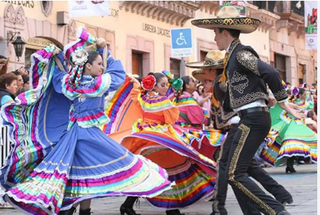

Cultura
Festival Cultural Zacatecas: Se celebra durante las vacaciones de Semana Santa, ofreciendo dos semanas de música, danza, teatro, cine y arte en diversos escenarios de la ciudad.
Festival Cultural Zacatecas: Se celebra durante las vacaciones de Semana Santa, ofreciendo dos semanas de música, danza, teatro, cine y arte en diversos escenarios de la ciudad.